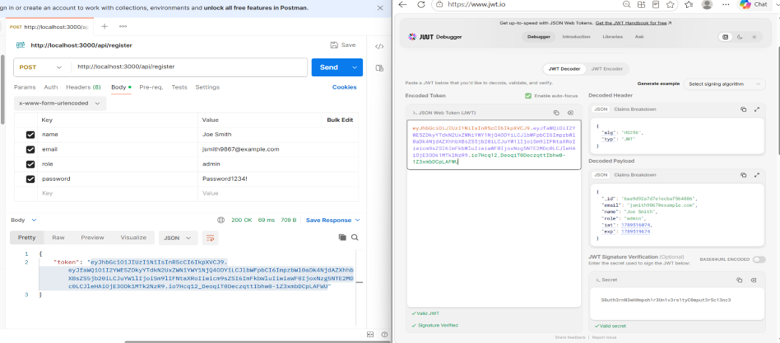
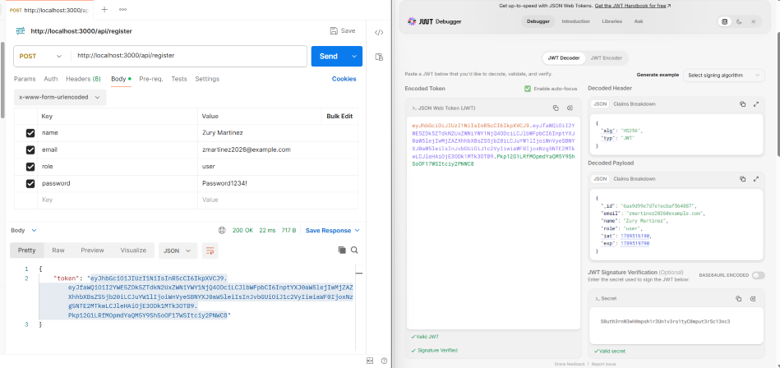
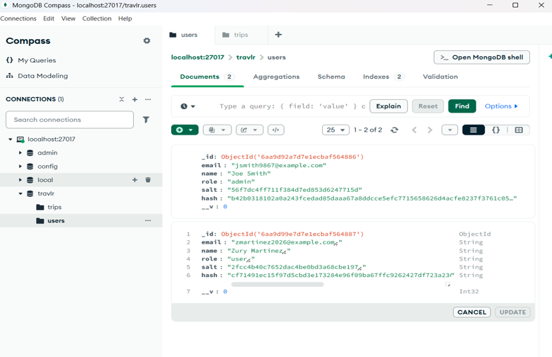
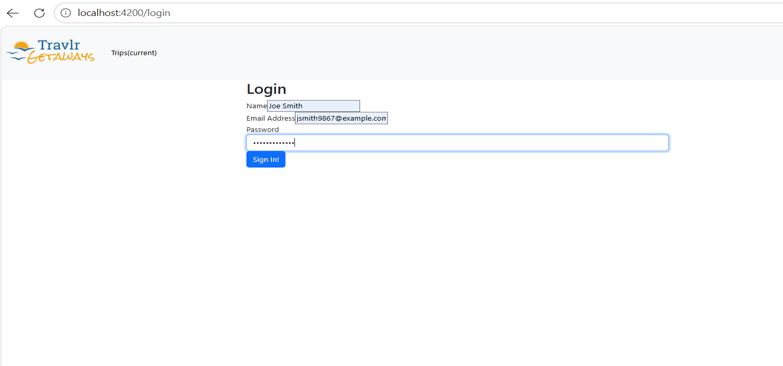
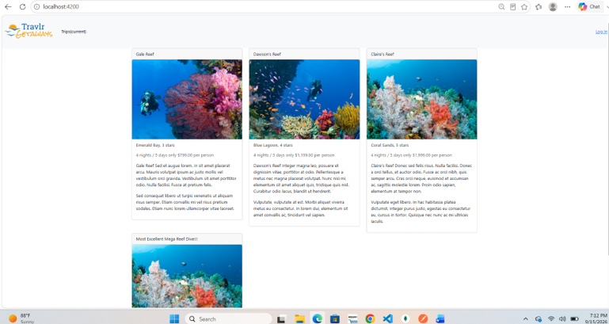
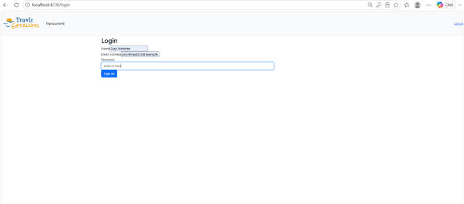
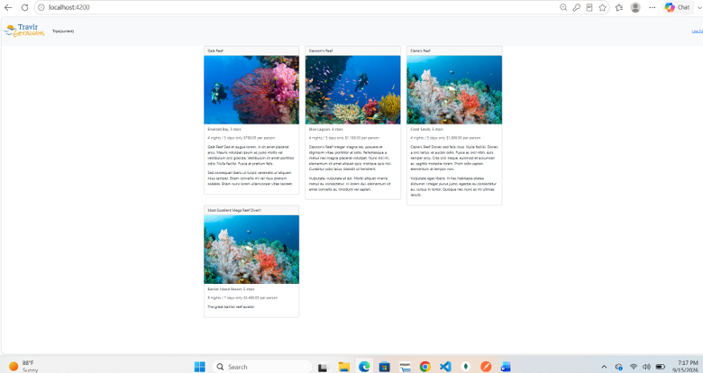

Software Design and Engineering
This enhancement focuses on strengthening the security and overall design of the Travlr Getaways application, originally developed in CS-465 using the MEAN stack.
The enhancement introduces role-based authorization using JSON Web Tokens (JWT) to distinguish between regular users and administrators. Protected backend routes restrict trip modification operations to authorized users, while Angular interface controls reflect the user's assigned permissions.
Enhancement 1 Narrative
Artifact Description
The artifact I selected for this enhancement is the Travlr Getaways full-stack web application, originally developed during CS-465. The application uses the MEAN stack to manage and display travel packages.
Justification for Inclusion
I selected this artifact because it demonstrated my ability to improve an existing full-stack application rather than developing an entirely new system. For this enhancement, I strengthened authentication and authorization by implementing JWT-based access controls, distinguishing regular users from administrators, and protecting API endpoints responsible for modifying trip information.
Course Outcomes
This enhancement demonstrates my ability to apply software engineering practices and develop a security mindset. By implementing role-based authorization and validating user permissions, I addressed potential vulnerabilities associated with unauthorized access to application resources.
Reflection
Enhancing Travlr Getaways helped me better understand the relationship between authentication, authorization, and application security. I learned that hiding administrative controls in the Angular interface is not sufficient to protect an application. Authorization must also be enforced on the backend to prevent unauthorized API requests. I tested these changes using Postman, JWT.io, and MongoDB to verify authentication behavior, token generation, and access restrictions.
Source Code and Enhancement
The links below provide access to the original Travlr Getaways application and the changes implemented for Enhancement 1.
Original Artifact
The original CS-465 application provides the foundation for the enhancements completed during my CS-499 capstone.
View Original ArtifactEnhancement 1: Software Design and Engineering
This enhancement introduces JWT-based authentication, role-based authorization, and protected API routes to improve application security.
View Enhancement 1 CodeTesting and Validation
After implementing Enhancement 1, I tested the application's authentication and authorization functionality to verify that users could access only the operations permitted by their assigned roles.
Postman API Testing
I used Postman to register and authenticate regular users and administrators. I verified that login requests returned JWTs and tested protected API endpoints to confirm that administrative operations were restricted to authorized users.
JWT Verification
I used JWT.io to inspect the generated tokens and confirm that they contained the expected authentication information and role-related claims.
MongoDB Verification
I examined MongoDB records to confirm that registered user accounts were stored successfully. I also verified that administrative users could add and edit trip information, while regular users were limited to viewing trips.
Testing Results
These tests demonstrated that the enhanced application enforced role-based access restrictions and supported the intended authentication workflow. The testing also reinforced the importance of validating permissions on the backend rather than relying only on interface-level restrictions.
Testing Screenshots
The following screenshots document the testing performed during Enhancement 1. They demonstrate user registration, JWT verification, database records, and the application's login and trip listing interfaces.
Authentication and JWT Verification
I used Postman to register administrator and regular user accounts through the application's API. I then inspected the generated JSON Web Tokens using JWT.io to verify that the token payloads contained the expected user information and assigned roles.


MongoDB Verification
I used MongoDB Compass to inspect the application's users collection and verify that both registered accounts were stored with their corresponding roles. The records also contain password hashes rather than plaintext passwords.

Application Interface Testing
I also examined the Angular application's login and trip listing interfaces while testing the authentication workflow. These screenshots document the interface used during administrator and regular user testing.



